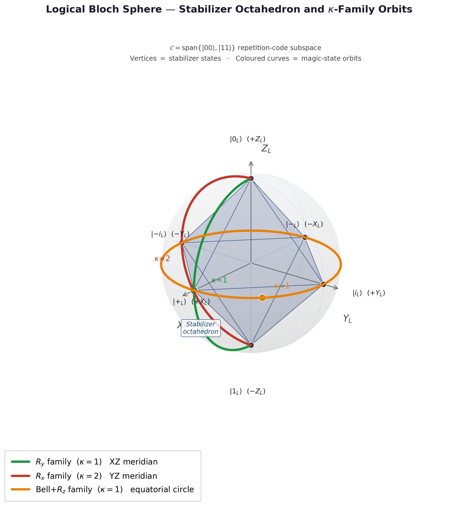
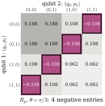

Credits a third-party Lean 4 formalization, with a GitHub repository, of the equatorial two-factor case of the product-equality theorem.
Abstract
Magic – the resource enabling quantum computational advantage beyond stabilizer circuits – has a clean phase-space characterization in odd prime dimensions that qubits notoriously lack. We study C(rho), the l_1 distance from a state's discrete Wigner function to the stabilizer polytope, and determine its exact geometry. For a single qubit with Bloch vector r we prove the closed form C = max(0, ||r||_1 - 1)/2, so the maximum is (sqrt(3)-1)/2, attained at the eight face states. For products of single-qubit states, C(rho_1 x ... x rho_n) <= prod_i (1 + C(rho_i)) - 1, with equality whenever every factor has Bloch sign product r_x r_y r_z <= 0; this includes the exact tensor powers ((1+sqrt(3))/2)^n - 1 and the exact maximum of C over fully separable n-qubit states. Because no discrete Wigner function for qubits is Clifford covariant, any such measure is frame dependent, and we identify which of its features are not. For a single qubit there are exactly two valid frames up to phase-space translation and C is identical on both. Pauli-covariant two-qubit frames number 2048 up to translation, and across them the ratio C(rho_Rx)/C(rho_Ry) takes the values 1/2, 1 and 2. In every one of these frames some stabilizer state has negative Wigner entries, a consequence of the Mermin-Peres square, so the two-qubit bound Gamma >= 1 + C/2 against the robustness of magic Gamma is frame independent. Within the Wootters frame we prove integer values 1, 2, 1 of the tightness ratio kappa := (Gamma-1)/C for three families in the two-qubit repetition codespace, with explicit certificates. For n-qubit GHZ phase states we prove Gamma = |sin phi| + |cos phi| for all n and C >= 2^(floor(n/2)-1) (|sin phi| + |cos phi| - 1), tight for n = 2 and, by exact linear programming, for n = 3, 4, so kappa decays exponentially. Finally, C is not a magic monotone, so it cannot replace Gamma in distillation bounds.
Problem
Qubits lack the clean phase-space characterization of magic that odd prime dimensions have. The paper studies C(rho), the l1 distance from a state's discrete Wigner function to the stabilizer polytope, and how it relates to the robustness of magic Gamma.
Approach
The paper derives the single-qubit geometry of the Wigner l1 metric as a cuboctahedral norm and proves product bounds for tensor products of single-qubit states. It analyzes frame dependence across single-qubit and 2048 Pauli-covariant two-qubit frames. Exact values of the tightness ratio kappa = (Gamma-1)/C are certified with explicit optimal free states and dual witnesses. The equatorial two-factor case of the product equality was previously proved and formalized in Lean 4 by Zhang and Haobo, and the paper cites that work.

Figure 3: The logical Bloch sphere for \mathcal{C}=\mathrm{span}\{|00\rangle,|11\rangle\} . The inscribed octahedron has the six stabilizer states as vertices. R_{y} (blue, \kappa=1 ), R_{x} (orange, \kappa=2 ), and Bell +R_{z} (aqua, \kappa=1 ) are shown.
Results
The paper proves C = max(0, ||r||_1 - 1)/2 for a single qubit, with maximum (sqrt(3)-1)/2, and exact tensor-power values ((1+sqrt(3))/2)^n - 1. It obtains kappa = 1, 2, 1 for three repetition-code families. For GHZ phase states kappa decays exponentially in n, and C is shown not to be a magic monotone.

Figure 4: Wigner functions of R_{y} (left) and R_{x} (right) at \theta=\pi/3 . The R_{y} state has 4 negative entries; R_{x} has only 2. The exact origin of \kappa^{Ry}=1 vs. \kappa^{Rx}=2 is the support of the optimal difference W_{\rho}-W_{\tau^{*}} (8 vs. 4 phase points; Table 2 ).